Close
Close

Introduction to the UNIX shell
Overview
Navigating the filesystem
File manipulation
Wildcards, redirection and piping
Variables and loops
File properties and permissions
Scripts
And more...
Connecting to a computer: 1970s
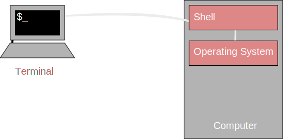
Connecting to a computer: over the Internet
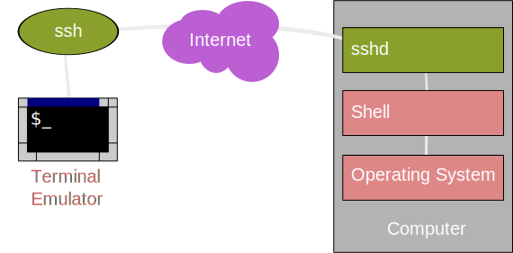
Communication encrypted!
Access to Legion
To access one of the login nodes (remotely) from a Unix machine:
ssh <username>@legion.rc.ucl.ac.ukLog on using UCL username/password
On Windows (e.g. Desktop@UCL) you can use PuTTY.
Access to Legion
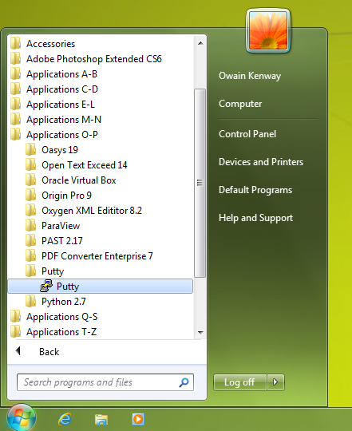
Access to Legion
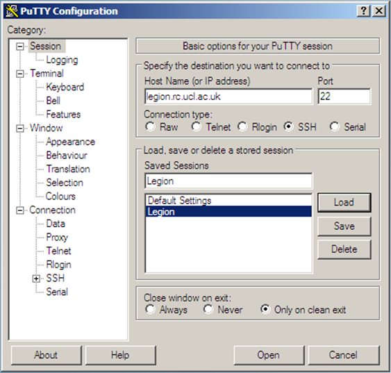
Navigating the filesystem
Command Prompt
[user@host ~]$
On Legion the command prompt has the form [<username>@<host name> <present directory>]$
<user name> is the Unix user name (your UCL user ID).
<host name> is the name of the computer that you are accessing.
<present directory> is the directory that the user is currently in.
Other systems you log into may have a different form of prompt.
Command Prompt
Read evaluate print loop
- User types a command and presses enter
- The shell reads this command, and evaluates it
- The shell then prints any output to the screen and returns the command prompt to the user
Some files to play with
[user@host ~]$ git clone https://github.com/tcouch/shell-training.git
- Copy this from the slides and right click in the terminal to paste it in.
What's in here?
[user@host ~]$ ls
Scratch shell-training
- ls - lists the contents of the current directory
What's over there?
[user@host ~]$ ls shell-training
animals data docs scripts
- Give ls the name of a directoty as an argument to list the contents of that directory
Hidden files and directories
[user@host ~]$ ls -a
. .bash_logout Scratch
.. .bashrc shell-training
.bash_history .emacs .ssh
- Files starting with "." are hidden
- We have changed the default behaviour of ls with a switch, also known as a flag or option
- Always leave a space to separate commands, switches and arguments
- Type
man lsfor a list of options you can use with ls (q to quit)
Hidden files and directories
[user@host ~]$ ls -a
. .cshrc shell-training
.. .config .ssh
.bash_history .emacs
- . - Present working directory (in this case ~)
- .. - Parent directory to the current directory (in this case /home)
Where am I?
[user@host ~]$ pwd
/home/username
[user@host ~]$
- pwd (print working directory) - returns the full path to your current working directory
- ~ 'tilde' is shorthand for your home directory
- / - the root directory
- Note: Windows uses backslashes '\' in paths, everything else uses forward slashes
Filesystem structure
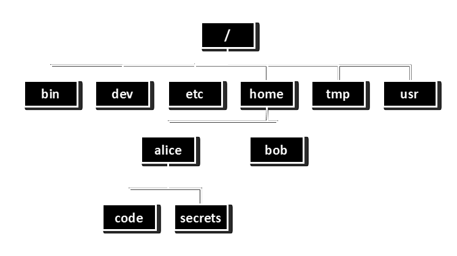
Changing directory
[user@host ~]$ pwd
/home/username
[user@host ~]$ cd shell-training
[user@host shell-training]$ pwd
/home/username/shell-training
[user@host shell-training]$ cd ..
[user@host ~]$ cd /
[user@host /]$
- cd - Type cd followed by the path to a directory to change into that directory
- .. - The current directory's parent directory
- / - Everything sits under the "root" directory
Absolute path
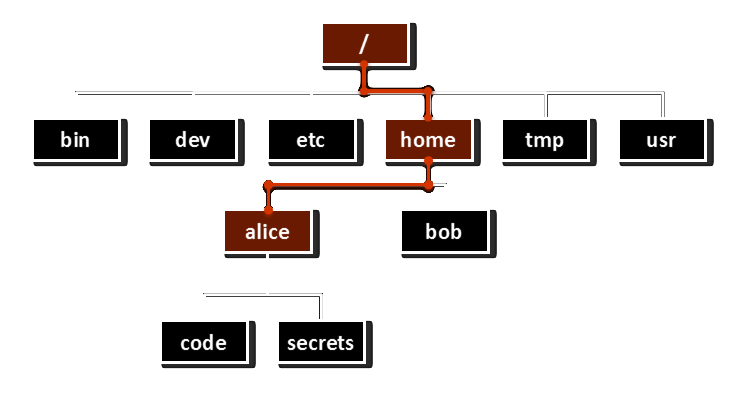
/home/alice
- absolute paths always begin with '/'
Relative path
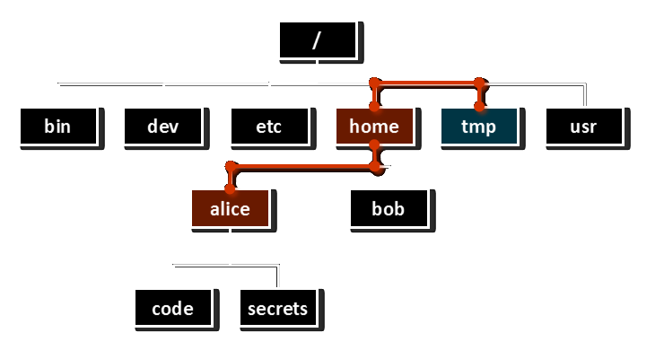
../home/alice
Absolute and relative paths
There are many ways of writing the path to a directory.
Every directory has a unique absolute path:
ls /home/username/shell-training/
Relative paths depend on your current location:
ls shell-training/
This relative path begins with the home alias and works from anywhere:
ls ~/shell-training/
This path works too:
cd /bin/../tmp/../home/username/shell-training
Tab completion
- Go to your home directory:
cd ~ - What happens if you type
cd shand then press the tab key?
Exercises
The shell-training folder has the following structure:
~/shell-training
|--animals
|--data
|--docs
|--scripts
- What is the absolute path to the docs directory? Use the absolute path to change into this directory
- From there, list the contents of the animals directory using a relative path
Exercises
- What does typing
cdon its own do? Try typing it from several different locations. - What does typing
cd -do? Try typing it from several different locations.
Creating Files and Directories
Directory creation
[user@host ~]$ mkdir a_directory
[user@host ~]$ ls
a_directory Scratch shell-training
- Type mkdir followed by the name of the directory you want to create.
Directory creation
[user@host ~]$ mkdir b_directory c_directory
[user@host ~]$ ls
a_directory b_directory c_directory Scratch shell-training
- You can create two directories at the same time: just separate the names with a space.
Directory creation
[user@host ~]$ mkdir shell-training/a_directory
[user@host ~]$ ls shell-training
a_directory animals data docs scripts
- You can put the path to an existing directory before your new directory name to create a directory in that location.
Nano: A simple file editor
[user@host ~]$ nano a_file
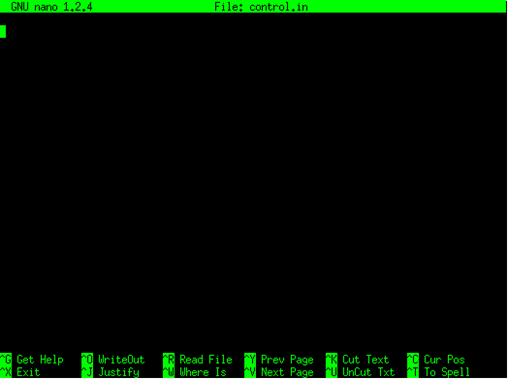
- If the file exists nano will open it, otherwise it will open a blank page
Nano
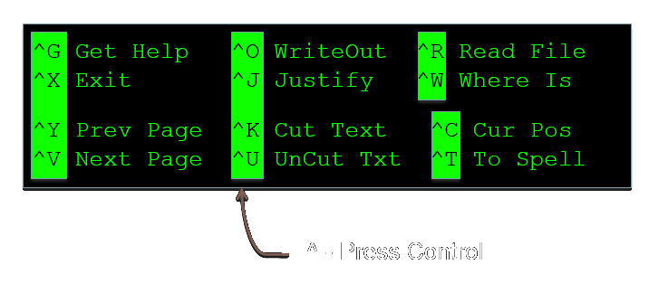
- Commands are along the botton of editor screen
- ^ - shorthand for control key
- Type Ctrl-O then Enter to save, Ctrl-X to exit
Other editors
There are many other (better but more complex) text file editors on the system such as vim, emacs and nedit.
Use the one you feel most comfortable with.
Naming files and directories
- You can use spaces in file and directory names, but this is generally a bad idea as you will have to use quotes whenever you refer to that file.
- Uppercase and lowercase characters are different: FILENAME does not equal filename
- Avoid special characters such as: $:/\,[]{}()!;"'*?<>|
- Filename extensions such as '.txt' or '.pdf' are a convention, not a requirement
A simple script
- A script is a list of commands, written in a text file, to be run one after another e.g.:
[user@host ~]$ nano a_script.sh
echo "Creating new directory..."
mkdir new_directory
ls
echo "Finished"
Running a script
- You can use the source command to run the script like so:
[user@host ~]$ source a_script.sh
Creating new directory...
a_directory a_script.sh c_directory Scratch
a_file b_directory new_directory shell-training
Finished
Running a script
- What happens if you run this script from another directory?
[user@host ~]$ cd shell-training
[user@host shell-training]$ source ../a_script.sh
Running a script
- The new directory is created in the current working directory, not the directory where the script file is located.
[user@host shell-training]$ source ../a_script.sh
Creating new directory...
a_directory animals data docs new_directory scripts
Finished
Exercise
Write a script that will do the following steps: a. Create a new directory called cake inside your home directory b. Use an absolute path to create a directory inside cake called "Cheesecake" c. Change into the Cheesecake directory d. Use a relative path to create another directory inside cake called "Battenberg" e. Return to the home directory and list the contents of cake
The final set of directories should look like this:
~/cake
|--Cheesecake
|--Battenberg
Exercise
Read the man page for mkdir to find out what the -p option does. Use it to create the following set of directories with a single command:
~/bread
|--focaccia
|--naan
Wildcards
Wildcards
[user@host shell-training]$ cd docs
[user@host shell-training]$ ls
123.dat abc.txt cake.txt def.txt r2d2.bot xyz.txt
abcde.txt ab.txt cheesecake.txt food.txt some-maths.txt
[user@host docs]$ wc abc.txt def.txt xyz.txt
10 52 168 abc.txt
7 61 394 def.txt
11 99 589 xyz.txt
28 212 1151 total
wccounts lines, words and bytes for each file- We can give wc the names of the files we want to inspect as arguments
Wildcards
[user@host docs]$ wc *.txt
13 119 683 abcde.txt
10 52 168 abc.txt
8 83 454 ab.txt
26 206 1332 cake.txt
11 105 656 cheesecake.txt
7 61 394 def.txt
13 85 561 food.txt
6 12 56 some-maths.txt
11 99 589 xyz.txt
105 822 4893 total
*is a wildcard that matches zero or more characters- Bash automatically expands *.txt into a list of filenames matching that pattern
Wildcards
[user@host docs]$ ls a*.txt
abcde.txt abc.txt ab.txt
*is a wildcard that matches zero or more characters.
Wildcards
[user@host docs]$ ls ???.txt
abc.txt def.txt xyz.txt
?is also a wildcard. It matches a single character.
Wildcards
[user@host docs]$ ls [fx]*
food.txt xyz.txt
- Square brackets will match any one of the characters listed inside them.
Manipulating Files
Inspecting files
[user@host animals]$ less birds.txt
- less - visualise a text file:
- use arrow keys
- page up/page down
- search by typing "/" and press "n" to step through the results
- quit by typing "q"
Searching files
[user@host animals]$ grep bat mammals.txt
whiskered bat, myotis mystacinus
natterer's bat, myotis nattereri
daubenton's bat, myotis daubentonii
leisler's bat, nyctalus leisleri
brown long-eared bat, plecotus auritus
- grep - search for lines in a file containing a certain text string
Other file inspection tools
| Command | Action |
|---|---|
| head | visualise the first 10 lines of a file |
| tail | visualise the last 10 lines of a file |
| cat | print file contents to the terminal screen |
| sdiff | visualise and compare two files side-by-side |
(Use "man <command>" to see more information)
Exercise
Use grep to search through all of the files in the animal directory to find animals with the word red in their name. Read the man page to find out how to make grep only select the word red, and not just any word containing r-e-d.
Copying files
[user@host ~]$ cp a_file copy_of_a_file
[user@host ~]$ ls
a_directory a_script.sh bread cakes.sh copy_of_a_file Scratch
a_file b_directory cake c_directory new_directory shell-training
- cp copy a file or directory
Moving/Renaming files and directories
[user@host ~]$ mv a_file control.in
[user@host ~]$ ls
a_directory b_directory cake c_directory copy_of_a_file Scratch
a_script.sh bread cakes.sh control.in new_directory shell-training
[user@host ~]$ mv control.in a_directory
[user@host ~]$ ls a_directory
control.in
- mv - rename or move a file/directory
- It is possible to move and rename a file with one command
Deleting files and directories
[user@host ~]$ rm a_directory/control.in
[user@host ~]$ rm a_directory
rm: cannot remove ‘a_directory/’: Is a directory
[user@host ~]$ rm -r a_directory
[user@host ~]$
- rm - delete a file
- rm -r - delete a directory and all of its content
- rm operations are irreversible!!!
- The -i argument is highly recommended
Aliases
[user@host ~]$ alias zap='rm -ri'
[user@host ~]$ zap *_directory
- You can create an alias for common commands to make you life easier
- Type alias on its own to see what aliases are already set up
Exercise
The docs directory contains several files ending in ".txt". Write a backup script that will create a backups folder and copy each of these files there.
- Run the script
- Delete two of the original text files and use nano to edit another
- Use sdiff to compare the file you've changed with the backed up version
- Read the cp man page to find out how to restore the deleted files from the backup folder without overwriting the changes you have made to the other files
Redirection
Redirecting output to a file
Rather than having the output of a command printed to the screen, we can send it to be written to a file instead.
[user@host ~]$ echo hello > hello.txt
[user@host ~]$ echo hello again >> hello.txt
[user@host ~]$ cat hello.txt
hello
hello again
>>appends the output to the end of an existing file.>will overwrite any existing content.
File inspection revisited
[user@host ~]$ cd shell-training/animals
[user@host animals]$ head -n 5 mammals.txt
common pipistrelle, pipistrellus pipistrellus
whiskered bat, myotis mystacinus
natterer's bat, myotis nattereri
daubenton's bat, myotis daubentonii
leisler's bat, nyctalus leisleri
- Use an option
-nwith head and tail to print n lines from the start or end of a file
The middle?
What about printing a number of lines from the middle of a file? There's no mid command!
An inefficient solution:
- Use
>to redirect what would normally be printed to the screen to a file instead - Save the output from head to a new file
- Use tail to select some lines from the new file
The middle?
[user@host shell-training]$ head -n 15 mammals.txt > temp.txt
[user@host shell-training]$ tail -n 5 temp.txt
european hedgehog, erinaceus europaeus
pygmy shrew, sorex minutus
wood mouse, apodemus sylvaticus
house mouse, mus domesticus
brown rat, rattus norvegicus
What if you wanted to do this for 1000 files? What if your work flow involves several intermediate steps? That's a lot of temporary files!
A better solution
We can use a pipe to redirect the output from one command and make it the input for another command:
[user@host shell-training]$ head -n 15 mammals.txt | tail -n 5
european hedgehog, erinaceus europaeus
pygmy shrew, sorex minutus
wood mouse, apodemus sylvaticus
house mouse, mus domesticus
brown rat, rattus norvegicus
Another link in the chain
- sed can be used to find and replace words in text
[user@host shell-training]$ head -n 15 mammals.txt | tail -n 5 | sed 's/mouse/elephant/g'
european hedgehog, erinaceus europaeus
pygmy shrew, sorex minutus
wood elephant, apodemus sylvaticus
house elephant, mus domesticus
brown rat, rattus norvegicus
- Any number of commands can be connected in this way (memory permitting)
- As long as each command takes text input and produces text output
- Even scripts or programs you write yourself
Another link in the chain
You can chain any number of programs together to achieve your goal:
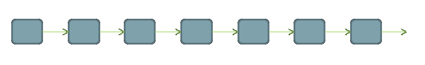
This allows you to build up fairly complex workflows within one command-line.
Exercise
Use the wget command to download Alice's Adventures in Wonderland: https://www.gutenberg.org/files/11/11.txt
Use less to read the file, search for specific words, and step through the results
Use grep to print lines containing a specific word or phrase to the screen
- e.g. how many times is the Cheshire Cat mentioned?
Use sed to replace every instance of Alice with your own name, and redirect the result to a new file.
Using a combination of head and tail, find lines 325-335
More about redirection
There are three streams of communication between a program and its environment:
- Standard Output (stdout): an output stream where a program writes its data - the default destination is generally the terminal screen.
- Standard Error (sterr): another output stream containing error messages - also printed to the terminal screen by default.
- Standard Input (stdin): default source of a program's input - it is generally the command line.
Output redirection and piping
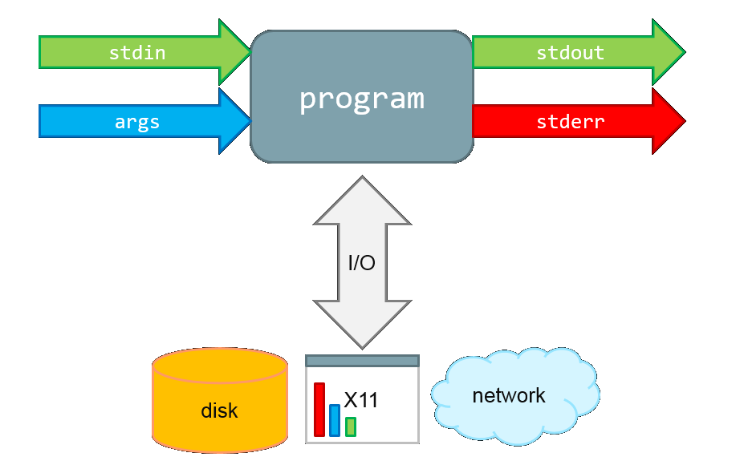
Output redirection and piping
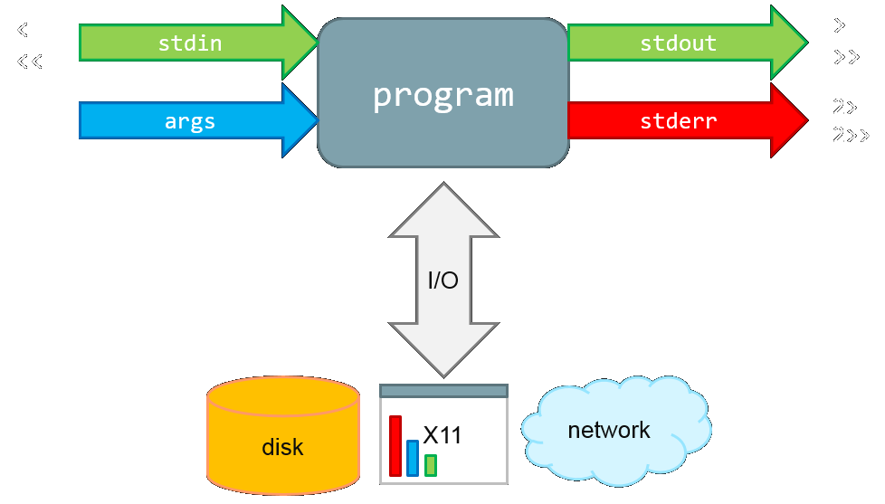
Redirecting StdErr
[user@host docs]$ wc *.txt not_a_file > txt_list 2> txt_list_err
2>redirects any error messages created by a command
Output redirection and piping
ls -l
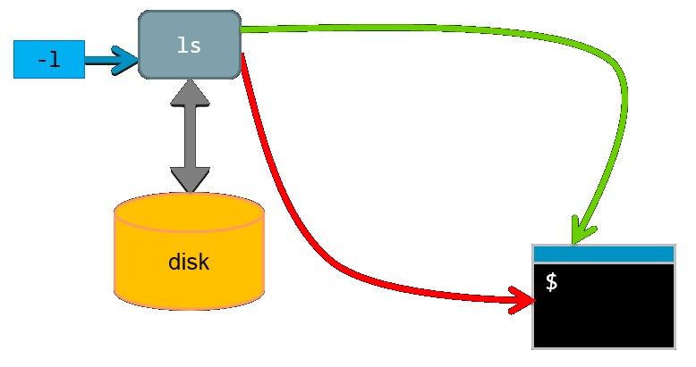
Output redirection and piping
ls -l > listoffiles
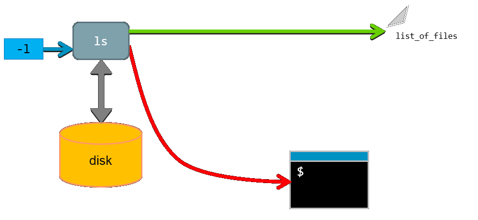
Redirecting input
You can also redirect standard input to a command, using <
to send the contents of a file in place of command line input.
[user@host docs]$ bc < some-maths.txt
3.14285714285714285714
9.99
16.66666666666666666666
10.312567
- bc allows calculations with floating point numbers.
Variables and Loops
A simple variable
[user@host ~]$ var1='hello'
[user@host ~]$ echo $var1 world!
hello world!
- Don't include spaces either side of the '=' sign.
- Variables can be referenced using the '$' sign and their name.
Quoting variables
[user@host ~]$ myname="John Smith"
[user@host ~]$ echo "Hello my name is $myname. Nice to meet you."
Hello my name is John Smith. Nice to meet you.
[user@host ~]$ echo 'Hello my name is $myname. Nice to meet you.'
Hello my name is $myname. Nice to meet you.
- When using double quotes, bash will scan the contents and expand any variables
Quoting variables
[user@host ~]$ fruit=orange
[user@host ~]$ echo "I love eating $fruits."
I love eating .
Quoting variables
[user@host ~]$ echo "I love eating ${fruit}s."
I love eating oranges.
- In some cases you will need to surround a variable name with braces.
Arithmetic with variables
[user@host ~]$ two=2
[user@host ~]$ result=$(( $two + 2 ))
[user@host ~]$ echo $result
4
[user@host ~]$
- Integer arithmetic can be done inside $(( ))
- + addition
- - subtraction
- / integer division
- * multiplication
Storing output of commands in variables
Run commands inside $( ) and assign the wrapped command to a variable
Arithmetic with variables
[user@host ~]$ ls
a_directory a_file
[user@host ~]$ dir_contents=$( ls )
[user@host ~]$ echo $dir_contents
a_directory a_file
Updated process diagram
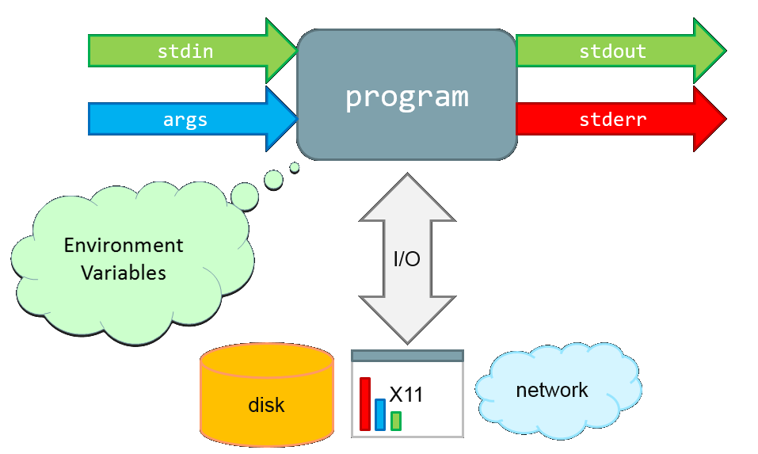
Special environment variables
What is the output of this command?
[user@host ~]$ echo $PATH
Note the structure: <path1>:<path2>:<path3>
PATH is an environment variable which Bash uses to search for commands typed on the command line without a full path.
Use the command env to discover more environment variables.
The for loop
[user@host ~]$ for i in first second third
> do
> echo $i iteration
> done
first iteration
second iteration
third iteration
- Defines a loop in which the variable "i" will take the values "first", "second" and "third" in that order.
- do/done - start and end the loop iteration definition.
The for loop using an iterator
[user@host ~]$ for (( i=1 ; i<=5 ; i++ ))
> do
> echo iteration$i
> done
iteration1
iteration2
iteration3
iteration4
iteration5
(Note how it is possible to create number labels)
Exercise
- In the docs directory, create a variable called files listing all of the text files.
- Loop through this list and print out the first line from each file.
Exercise
- Use a for loop to create five directories called calculation_?, where ? is a number.
- Use a loop to create five directories, each one the parent of the next.
File properties and permissions
File properties
[user@host ~]$ ls -l
total 368
-rw-r--r-- 1 course1 ucaac2 167546 Jan 25 2014 11.txt
-rw-r--r-- 1 course1 ucaac2 72 Jun 6 12:34 a_script.sh
drwxr-xr-x 4 course1 ucaac2 4096 Jun 6 12:43 bread
drwxr-xr-x 4 course1 ucaac2 4096 Jun 6 12:41 cake
...
- ls -l - list file properties (details)
File properties
drwxr-xr-x 4 course1 ucaac2 4096 Jun 6 12:43 bread
drwxr-xr-x - File type and permissions
4 - Number of links to the file
course1 - User name of file owner
ucaac2 - Group to which the file belongs
4096 - size of file in bytes
Jun 6 - last change date
12:43 - last change time
bread - file name
File permissions
There are three user security classifications that apply to the ownership of a file:
- user: the individual user that has ownership of the file
- group: a group of users to which that user belongs
- others: all other users (not owner or in that group)
Each of these has three file access classifications:
- read: permission to read the file
- write: permission to write the file
- execute: permission to execute (run) the file
File permissions
drwxr-xr-x has four fields:
| d | The file is a directory |
| rwx | The user has read, write and execute access |
| r-x | The group has read and execute access |
| r-x | Others have read and execute access |
| Permissions | read | write | execute |
|---|---|---|---|
| rwx | yes | yes | yes |
| rw- | yes | yes | no |
| r-- | yes | no | no |
| r-x | yes | no | yes |
| --- | no | no | no |
File permissions
[user@host ~]$ ls -l
drwxr-xr-x 4 course1 ucaac2 4096 Jun 6 12:43 bread
[user@host ~]$ chmod go-rx bread
[user@host ~]$ ls -l
drwx------ 2 user rcops 4096 2009-12-08 07:31 a_directory
- chmod - change the permissions of a file
File permissions
How did the permissions definition go-rx work?
chmod [ugoa][+/-][rwx] file
ugoa - user, group, other, all
+/- - add/remove
rwx - read, write, execute
If you don't specify u,g,o or a, default is ALL (so chmod +x makes file executable for everyone).
What groups am I in?
[user@host ~]$ groups
ucaac2 legon020
Exercise:
- Find a partner who is in the same group as you. Use the groups command to check.
- In your home directory, create a new directory and give members of your group write access to it, but take away read access.
- Tell your partner the absolute path to the directory you've given them write access to.
- Share files by copying them to each other's shared directories.
Exercise
The data folder contains 200 files. Each file is named according to a type of measurement (A or B), and a location (1-100) e.g. A21, B56 etc. The scripts folder contains a python script which takes the names of an A and a B file as arguments e.g. scripts/calculatescore.py data/A1 data/B_1 This will calculate a score based on the data in the two files and print it to standard output along with the name of the files used.
Make calculate_score.py executable
Use a for loop to run through the data files corresponding to each location and generate a score
Modify the for loop to save the scores to a file
Use the sort command to find the location with the highest score
Shell Scripting
Shell scripting
So far we've been using source to run our scripts, but it's also possible to make them executable - just like commands.
Step 1: The Interpreter Directive
#!/bin/bash
# This is a very simple hello world script.
echo "Hello, world!"
- #! - is used to indicate which program should be used to interpret the script
- In this case it's bash, it could also be a language like python, perl, ruby etc.
- This must be the first line in the script
- # - a comment (ignored by /bin/bash)
Step 2: Making it executable
[user@host ~]$ chmod u+x hello_world.sh
[user@host ~]$ ls -l hello-world.sh
-rwxr--r-- 1 user ccaas0 30 Mar 31 17:10 hello_world.sh
- Use chmod to change permissions on the script and make it executable
Step 3: Location
[user@host ~]$ ./hello_world.sh
hello world!
- What's with the "./" ?
- Remember the PATH!
Changing the PATH
If you want to be able to make your script work like a command, you need the directory it is in to be in your PATH
[user@host ~]$ mkdir ~/scripts
[user@host ~]$ PATH=$PATH:$HOME/scripts
[user@host ~]$ export PATH
- Create a directory in your home directory specifically for your scripts
- Add this directory to the PATH environmental variable
- Make sure the scripts you want to use are executable
Command line arguments
You can control your script's behaviour with arguments you pass to it when you run it.
[user@host ~]$ ./script.sh var1 var2
Within the script: $1 contains "var1" $2 contains "var2"
Command line arguments
The script looks like this: ```
!/bin/bash
echo The first argument is $1 echo The second argument is $2 echo And together they make ${1}${2} ```
And here it is in use:
[user@host ~]$ ./var-script green house
The first argument is green
The second argument is house
And together they make greenhouse
Exercise
You can now control the number of times a for loop iterates by including a number as an argument when you call it. Write a script which will create as many numbered directories as you want when you run it.
Exercise
Create a bash script called hi which will use the USER environment variable to say hello to you
Make this script executable
Create a /scripts directory in your home directory
Add this directory to the PATH environment variable
Move the new script there and try running it as a command
Login Scripts
Variables are temporary
- If you close PuTTY and log back in, you'll find your changes to PATH and any aliases you created have gone.
- You'll need to set them all up again if you want them to work.
- If you put them in a login script, they'll be setup every time you login.
Those dot files
Remember those hidden files in your home directory? Some of them are actually pretty useful.
- .bash_profile is a script that runs every time you log in to the system
- .bashrc is a script that runs every time you start a new interactive shell
- It's quite common for .bash_profile to include a command to run .bashrc automatically
Both of these are already set up for you on Legion, but you can improve them as you like.
Exercise
Edit your .bash_profile script in your home directory and include some commands to be run when you log in. For example:
- alias
- cal
- echo "Welcome back $USER"
- PATH=\$PATH:\$HOME/scripts && export PATH
Close PuTTY and log back in.
Now edit .bashrc to report $SHLVL when you start a new instance of bash
Archiving and transferring files
Archiving and compression
[user@host ~]$ tar -czvf work.tgz work
work/
work/program/
work/calculations/
work/calculations/control.in
work/workfile
- tar -zcvf - archives and compresses directory trees and files
- c - create archive
- z - compress
- v - verbose
- f - in the following file
Accessing another system
Use the ssh command to login to other systems you have access to
[user@host ~]$ ssh <username>@aristotle.rc.ucl.ac.uk
- Type Ctrl-D or logout to return to Legion
Transferring files across a network
To Aristotle:
[user@host ~]$ scp work.tgz <username>@aristotle.rc.ucl.ac.uk:
...
Password:
work.tgz 100% 213 0.2KB/s 00:00
- remember to put the colon at the end!
Extracting files from a compressed archive
[user@host ~]$ tar -xzvf work.tgz
work/
work/program/
work/calculations/
work/calculations/control.in
work/workfile
- tar -zxvf - extracts and uncompresses directory trees and files
- x - extract archive
- z - uncompress
- v - verbose
- f - from the following file
Transferring files across a network
From Aristotle:
[user@host ~]$ scp <username>@aristotle.rc.ucl.ac.uk:~/work.tgz .
...
Password:
work.tgz 100% 340 0.3KB/s 00:00
- . means copy to this directory
Exercise
Use tar to create an archive of the shell-training directory
Use scp to copy the archive to Aristotle: aristotle.rc.ucl.ac.uk
Extract the archive file on Aristotle
Use scp to copy a file from Aristotle to your home directory
Process control
Process control
A process is in the:
- foreground when it is interacting with the user via an interface (usually the shell).
- background if it is running without interacting with the user.
- suspended if it is neither interacting nor running.
To run a process in the background: add the symbol "&" at the end of the command line.
To send a foreground process to the backgound: press Ctrl+z and then execute the command "bg"
To bring a background process to the foreground: execute the command "fg"
Which processes are running?
Use the jobs command
[user@host ~]$ sleep 60 &
[1] 24991
[user@host ~]$ jobs
[1]+ Running sleep 60 &
Or ps for more information
[user@host ~]$ ps
PID TTY TIME CMD
24467 pts/6 00:00:00 bash
24991 pts/6 00:00:00 sleep
24996 pts/6 00:00:00 ps
Killing processes
Use the kill command with the PID:
[user@host ~]$ kill 24991
[1]+ Terminated sleep 60
Or use the job number:
[user@host ~]$ kill %1
[1]+ Terminated sleep 60
More information
Many topics not covered here:
- if statements
- case switches
- defining functions
- and many, many more...
Google and the man pages are your friends!
GNU Screen
Intro to GNU Screen
Q: What happens if you want to:
Log out and turn off your PC?
Go home and continue working?
Freely create and delete shell sessions within one terminal?
A: Use a terminal multiplexer like GNU screen
First, log into Aristotle
ssh user@aristotle.rc.ucl.ac.uk
(or use Putty)
- Take a note of which login node you are assigned!
Then, run "screen"
screen
The screen will clear and you will be presented with a new prompt.
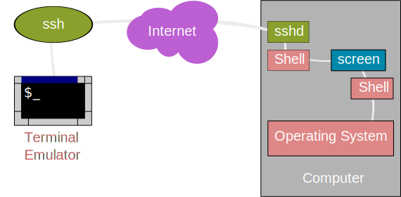
Do something in that shell (e.g.) "ls".
Creating new shells in Screen
Press Ctrl-a, then press c
You'll be given another shell (what screen calls a "window")!
Create new "windows" with Ctrl-a, c
Ctrl-a, a switches between this window and your last one.
Windows are numbered 0->N, Ctrl-a, number (e.g. Ctrl-a, 3) to switch to a particular one.
Detaching from your session
- Ctrl-a, d detaches from your session.
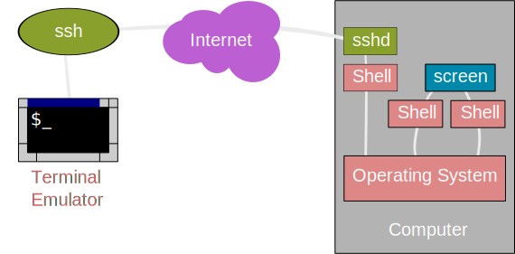
- screen -r re-attaches.
Log out
- You can log out of a machine you have a detached session on and programs will keep running.
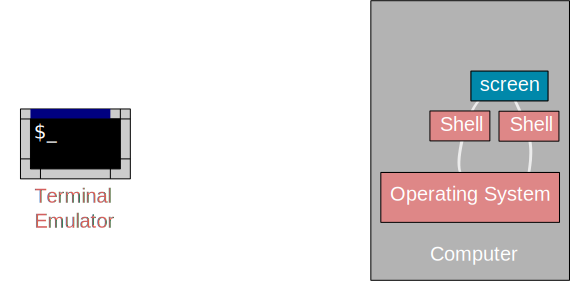
Logging back in
- Then log back in (from anywhere!) and screen -r to re-attach.
Logging back in
- Then log back in (from anywhere!) and screen -r to re-attach.
NOTE: make sure you log into the same login node that you started screen on
Other screen commands
screen -d - forces detach of a screen that's running (so you can screen -r it). Handy if your SSH connection drops.
screen -ax - forces attach to a screen that's attached to from somewhere else.
You can configure screen in lots of useful ways, including changing the keyboard shortcuts.
For more see man pages, or online documentation: (http://www.gnu.org/software/screen/)
More useful shell commands
Formatted sequences based on numbers
[user@host ~]$ seq 1 5
1
2
3
4
5
- seq - generates sequences based on numbers
Formatted sequences based on numbers
[user@host ~]$ seq 1 2 9
1
3
5
7
9
- seq - generates sequences based on numbers
Formatted sequences based on numbers
[user@host ~]$ seq -f %03g 1 2 9
001
003
005
007
009
- g - the number of significant digits is 3
- 0 - in front of 3 indicates that the number is padded with zeros if smaller than 100.
- % - start the format definition for the number (place the number)
Links
Created with "ln"
Two types:
- "Hard" - indistinguishable from files
- "Soft" (or "Symbolic") - like a shortcut
Hard links
Inode table keeps track of hard links
Deleting a file = "unlinking" it
Can only be used inside a single file system
Soft links
- Shortcut, e.g.
[user@host ~]$ ln -s ~/some_project/2012/part531 ~/current_project
[user@host ~]$ ls -l ~
lrwxr-xr-x 1 user staff 11 10 Oct 17:56
current_project -> /home/user/some_project_2012/part531
Can use relative or absolute paths!
Create using absolute paths to make sure they go where you want
Generating scripts with scripts
cat <<EOF > child_script.sh
#!/bin/bash
echo The child script says Hi!
EOF
- <<EOF - concatenates the text until the string "EOF", redirecting it to cat
- > child_script.sh - redirects the output of cat to child_script.sh.
- It may be tempting to indent things - DON'T!
Exercise:
write a parentscript.sh that creates and executes the childscript.sh
write a parentscript.sh that creates and executes 10 different childscript.sh that print out their individual number